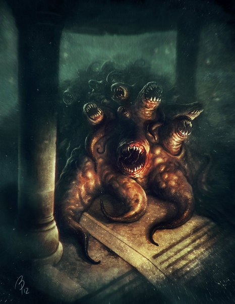

Много миллионов лет назад на Землю, прибыла неизвестная раса, и таинственных колонизаторов с планеты Юггот сопровождал их страшный бог — Гатаноа. Позднее сыны Ютота сгинули во тьме времен, но темное кровожадное божество обладало бессмертием.
Спустя мириады веков первые люди узнали, что логово страшного Гатаноа находится на континенте Му, в недрах горы Йаддит-Гхо. Но страх людей был настолько велик, что никто не осмеливался подняться на гору, чтобы увидеть своими глазами руины крепости, в подземелье которой обитало чудовищное создание. Вокруг горы Йаддит-Гхо в царстве К’наа возник настоящий культ, а жрецы Гатаноа стали очень могущественны. Культисты кровавого бога имели огромное влияние и богатство и состав- ляли многочисленную касту на континенте Му.
Люди верили, что если не совершать неописуемому Гатаноа подношений, то он спустится с Йаддит-Гхо и разрушит все на своем пути. Поэтому жрецы Древнего бога ежегодно приносили в жертву двенадцать юношей и девушек в мраморном храме у подножия таинственной и пугающей горы.
По легенде, внешний вид Древнего Гатаноа превращал жертву в камень. Паралич охватывал только оболочку, а мозг оставался живым. Сознание, заточенное внутри каменного тела словно в раковине, жило на протяжении многих лет.
Гатаноа подробно описывается в рассказе «Вне времени» (Out of the Aeons, 1935), написанном Г. Ф. Лавкрафтом в соавторстве с Хэйзел Хилд.
